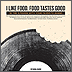

Kitchen
I Want to See That!
Lately, I've been enjoying the I Want To See That! Podcast, hosted by my friends, Ben and Katie, in which they "review" movies that have not yet been released. The show is a companion to the I Want To See That! web site that helps people get out from behind their computers and see movies together in real space.
It doesn't have much to do with cooking or music, but Ben Brown is the original Internet Rockstar, and he and Katie are so cute, I want to grab them by their shoulders and shake them! Plus, the podcast features a theme song written by my husband, Jeff Robbins (of the band Orbit and consulting firm Lullabot).
Movie reviews + humor + awesome web tool + cuteness + rockin' theme song = I Want To See That! (you do too!)
Hardcore Foodie
What do you get when you mix punk rock with culinary prowess?... You get Jeremy Bruch from the band What Made Milwaukee Famous. I definitely hit the jackpot with this interview. He had so much good stuff to say that I had a hard time paring it down to 8 minutes (my longest episode ever).
Here are a few of my favorite lines:
“Food is not supposed to make you sad.”
“Good + Good + Good = Good… usually.”
“I’ll eat a McGriddle twice a year just for the culinary science of it.”
and this, from the cutting room floor:
[regarding some culinary school grads:]
“They cook like they’ve never been f&#-d properly!”
I’m looking forward to taking on his hardcore lobster-n-gruyere based mac-n-cheese recipe. If you try it, drop me a line or leave a comment to let me know how it goes!
I Won! (at the Winnies)
I was the luckiest girl at the Winnies. Not only did I receive the most beautiful and kick-ass trophy for "Best Mashup of Cooking and Music Podcasts", but it was also presented by Tanja Andrews, host of Freshtopia.net, undeniably the most beautiful and kick-ass woman in the house!
At Freshtopia, Tanja shows how to prepare delicious meals and desserts from fresh, raw, vegetarian ingredients. You can lower your cholesterol and clear your complexion just by watching it regularly. I'm serious.
The entire evening was loads of fun. It was a treat hanging out with my fellow video podcasters, some of them old friends, and some new. Thanks and a big round of applause go to Irina Slutsky for hosting and arranging the whole event.
But can you believe I forgot my camera?! In lieu of my own photos, I'll point you to a few taken by Barb of Team Freshtopia as well as from the Winnies red carpet photographer. Click on the image to see their full-size versions on Flickr, as well as other shots from the event.
 Me with Irina Slutsky, Winnies host and organizer, on the official red carpet.
Me with Irina Slutsky, Winnies host and organizer, on the official red carpet.
Tanja, host of Freshtopia.net, presents me with my amazing custom-made trophy. Photo by Barb of the Freshtopia team.

Here is a better look at the trophy Tanja made. The figure is holding a little measuring spoon and sitting on a drum that was crafted from a wooden spool, pins, and thread. And if that wasn't enough, the base is a scented candle!
Going to the Winnies!
Hey everybody! I'm going to be getting a very special award at the Winnies on November 30 in Los Angeles! Well, actually, everybody who goes will be getting a very special award, and that's entirely the point. I'm very excited about rubbing elbows and hobnobbing with my fellow podcasters.
Dinosaur Jr.
The silver lining of growing older is that eventually, your favorite bands reunite and you get to relive your youth. That’s what I did Saturday night at the Dinosaur Jr. show in Boston. I remember going to see them back in ’87/88 at Green Street Station and becoming totally addicted to their particular blend of melody and noise. And yes, the cover of my You’re Living All Over Me LP says simply “Dinosaur” because the Jr. part hadn’t been tacked on yet.
I chatted with J Mascis before the show just enough to learn that he cooked a turkey by himself this Thanksgiving. I’m impressed… I’ve yet to do that! I’ve invited J to cook with me on the show, so we’ll have to see what happens. Lou Barlow is a friend of mine from back in the day, but I wasn’t able to track him down that night. Don’t be surprised if he turns up on this show (or the upcoming Parenting with Rockstars) as well one day.
Finally, although it’s not related to music OR cooking, and may even be considered rude, I can’t help but comment on the band’s hair. Dinosaur Jr represents a startling range of hair options for 40-ish men: full head of brown hair (Lou), full head of awesome gray hair (worn long and proud by J), and no hair at all (Murph)! If the Stones are any indication, there’s no reason to let a little aging stop the rock. Here’s to more reunion tours!

Categories
Now Playing
Cool Stuff
Links to stuff that you might like too.
- I Like Food, Food Tastes Good
- It's a real cookbook with real recipes from real indie rockers. No, I didn't write it (Kara Zuaro is the author), but if you like this site, this book is a great read, even if you don't spend much time in the kitchen.
- LiamLynch.net
- Director, producer, and musician, Liam Lynch, is also my brother. Check out his site and definitely don't miss his amazing and hilarious podcast, Lynchland (also available through iTunes).
- Pitchfork
- I'm probably not telling you something you don't already know, but this publication sets the standard for new music reviews.
- KEXP
- I've found out about more new bands by listening to KEXP (based in Seattle) than through any other source. I love you, John in the Morning.
- Chow.com
- I've been a fan of Chow since it first appeared in print. Now an online resource, this my first stop for all things food.
- Serious Eats
- A foodie/blog community that is another place to hang out if you're looking for food ideas and recommendations.
All content copyright © Jennifer Robbins and Jenville Productions